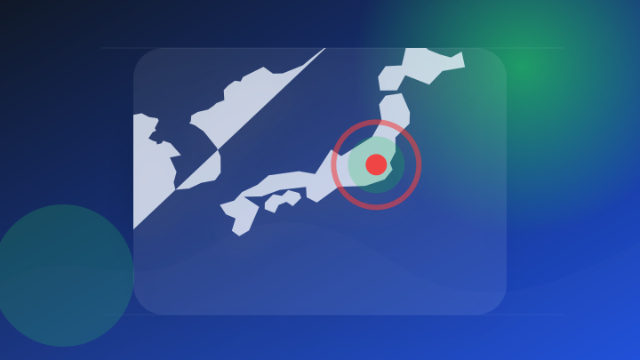
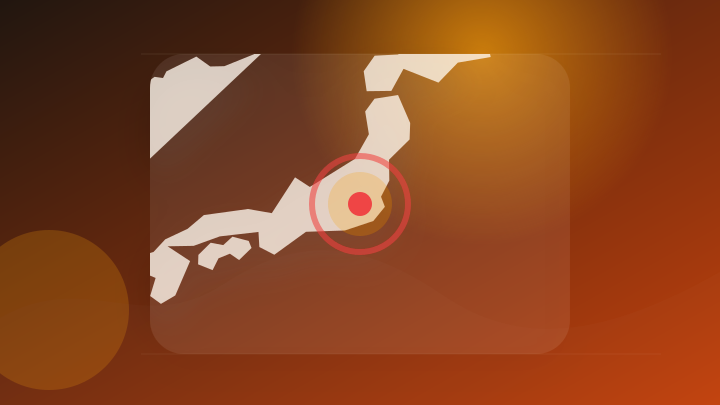
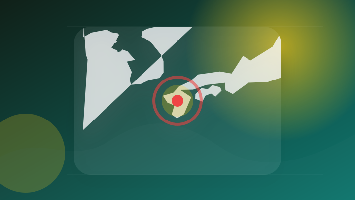
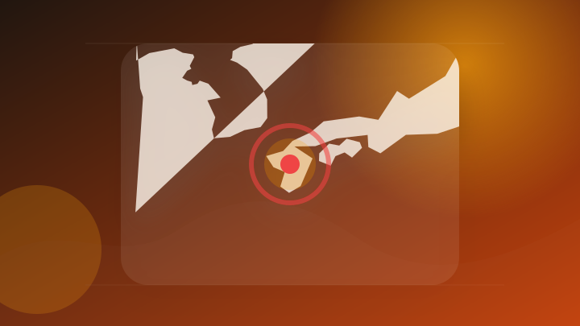
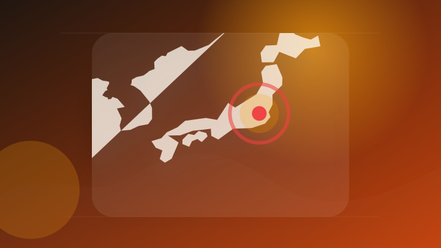

AI
6 topics
$スペースX (SPCX.US)$ ChatGPTによる推計値です
注目ポイント注目度 61点
Anthropic、Claudeなどの生成文に電子透かしを導入 欧州AI規則に対応
Межа. Новини Ук…
注目ポイント注目度 61点
機能安全開発におけるGoogleTestの活用を支援!「Parasoft C/C++test CT」で実現する効率化＆AI連携
機能安全開発におけるGoogleTestの活用を支援!「Parasoft C/C++test CT」で実現する効率…
注目ポイント注目度 61点
【無料】Google AI Studioとは？できることや使い方、料金を解説
注目ポイント注目度 61点
【漫画】「やりすぎなくていい」 頑張りすぎて落ち込む妻を救った夫の“一言”に「生きてるChatGPT！」
注目ポイント注目度 61点
Box上のファイルを２分でスライド化。生成AIサービス「ChatSense」がリリース
注目ポイント注目度 61点
IT業界
6 topics
Apple Arcadeが「Block Blast!+」と「Art of Fauna: Cozy Puzzles+」でレベルアップ
Apple Arcadeが「Block Blast!+」と「Art of Fauna: Cozy Puzzles+…
注目ポイント注目度 61点
Mrs. GREEN APPLE大森元貴「みんなに会えるの楽しみだ！」9月末〜12月末まで全国13会場・全28公演のファンクラブツアー開催決定
Mrs. GREEN APPLE大森元貴「みんなに会えるの楽しみだ！」9月末〜12月末まで全国13会場・全28公演…
注目ポイント注目度 61点
オラクル（ORCL）、Google AIとの提携を強化：同社の企業としての競争優位性は、ひそかにエージェントへとシフトしつつあるのか？
オラクル（ORCL）、Google AIとの提携を強化：同社の企業としての競争優位性は、ひそかにエージェントへとシ…
注目ポイント注目度 61点
これが喫緊の課題｢サイバーセキュリティ｣関連22銘柄だ！（会社四季報オンライン）
注目ポイント独立2媒体｜注目度 61点
iPhone18 Ultraの品薄確定？Appleが2026年の製品出荷計画を下方修正 - iPhone Mania
iPhone18 Ultraの品薄確定？Appleが2026年の製品出荷計画を下方修正
注目ポイント注目度 61点
中国・深圳のテクノロジー観光、外国人観光客に人気 (2026年8月11日掲載)
注目ポイント独立2媒体｜注目度 61点
政治
6 topics
高市首相が贈ったメロン巡り、オーストラリア首相の発言が炎上
注目ポイントAI｜独立2媒体｜注目度 70点
ロシア最高裁 反戦政党の下院選挙への参加認めない判決（ABEMA TIMES）
注目ポイント独立2媒体｜注目度 66点

11日の高市首相の動静
注目ポイント注目度 64点
豪首相 高市総理が贈ったメロンめぐり不適切な言動か
注目ポイント注目度 64点
個人向け国債の利回りが前年比0.9%上昇 日銀が国債保有高を圧縮するも、政府は個人向け国債の拡販を後押しか 強みと弱みを分析する
個人向け国債の利回りが前年比0.9%上昇 日銀が国債保有高を圧縮するも、政府は個人向け国債の拡販を後押しか 強みと…
注目ポイント注目度 64点
米中間選挙、トランプ不人気も共和党敗北の「常識」覆すか 民主党は資金難と左傾化が重荷 世界を解く－E・ルトワック
注目ポイント注目度 64点
社会
6 topics
金品を盗む目的で住宅に侵入、なぜかチャーシューを盗む 72歳の男を逮捕（山形・鶴岡市）
注目ポイント独立2媒体｜注目度 95点
一時停止の標識“引っこ抜く” 高校生ら逮捕 北海道・小樽市
注目ポイント独立2媒体｜注目度 72点
倉庫で1億円相当の大麻栽培 2人逮捕 北海道・日高町
注目ポイント注目度 70点
食料品工場跡で大麻草栽培1千株 男2人を再逮捕 北海道警 [北海道]
注目ポイント注目度 70点
“投げ銭” 1000万円超 殺害された89歳母親は逮捕の娘（54）に「家を建ててやった」 千葉・いすみ市
注目ポイント注目度 67点
高齢者が車にはねられ死亡 大学生が逮捕 札幌市
注目ポイント注目度 67点
事件・事故
6 topics
内偵捜査1年…部屋を埋め尽くす大麻草【北海道内過去最高】大麻草1083株・末端価格1億円相当 30歳の男2人を逮捕 北海道日高町の倉庫
内偵捜査1年…部屋を埋め尽くす大麻草【北海道内過去最高】大麻草1083株・末端価格1億円相当 30歳の男2人を逮捕…
注目ポイント注目度 70点
「若者複数人が標識を折っている」目撃者が110番 立ち去った男らを防犯カメラなどで特定⇒2か月後に逮捕 19歳男子高校生「折るつもりはなかった」20歳男「間違いない」北海道小樽市
「若者複数人が標識を折っている」目撃者が110番 立ち去った男らを防犯カメラなどで特定⇒2か月後に逮捕 19歳男子…
注目ポイント注目度 70点
「なんでチャーシュー?」と警察も首かしげ…金品目的で住宅侵入、しかしチャーシューを盗んだ無職の男を逮捕「食べたかった」という主旨の供述（山形・鶴岡市）（テレビユー山形）
「なんでチャーシュー?」と警察も首かしげ…金品目的で住宅侵入、しかしチャーシューを盗んだ無職の男を逮捕「食べたかっ…
注目ポイント注目度 67点
海兵隊第1師団からわずか1ヵ月の間に銃器死亡事故と身柄無断離脱、負傷兵士訓練参加強要事件が相次いで発生した。
注目ポイント注目度 67点

ホームセンターの駐車場で高齢女性がひかれ死亡／埼玉県（テレ玉）
注目ポイント注目度 67点
「きちんと寝たはずなのに…」 高速道路で襲ってくる強烈な睡魔！ 死亡事故365件で浮かぶ“眠気”の盲点とは
注目ポイント注目度 67点
芸能人の結婚・離婚・交際
1 topics
国際
4 topics
災害
6 topics
台風１５号 東北最接近 土砂災害に厳重警戒
注目ポイント注目度 70点

熊本地震「どこに居場所があるか分からない」を解消。災害時の子どもの居場所ポータルサイトを開設
注目ポイント注目度 70点
熊本地震 災害ゴミ置き場に長蛇の列 [写真特集1/5]
注目ポイント地震・AI｜注目度 70点
熊本地震、人的被害392人に 新たに死者名も公表、氷川町の16歳
注目ポイント注目度 70点
【台風15号】このあと関東上陸へ …暴風・高波・土砂災害などに要警戒 千葉・銚子市から中継
news.ntv.co…
注目ポイント注目度 70点

災害関連死を防ぐ「2次避難」協定結ぶも具体的な運用方法は未定も…能登や熊本の教訓から課題浮き彫り
注目ポイント注目度 70点
ライフ
3 topics
科学
3 topics
ＷＨＯ、小児予防接種勧告「科学に基づく」 トランプ氏の見直し受け
注目ポイント独立3媒体｜注目度 68点
『宇宙兄弟』企画展が鹿児島市ではじまる 鹿児島ゆかりの展示や限定商品も（2026年8月11日掲載）｜KYT NEWS NNN
『宇宙兄弟』企画展が鹿児島市ではじまる 鹿児島ゆかりの展示や限定商品も（2026年8月11日掲載）
注目ポイントKYT・NEWS｜独立2媒体｜注目度 64点
Steamマルチ対応・細かすぎ宇宙船クラフト『Approximately Up』95%好評で人気白熱中。自由に作れて落ちれば粉々、発売前から“数百時間プレイヤー”を生んだ船づくり
Steamマルチ対応・細かすぎ宇宙船クラフト『Approximately Up』95%好評で人気白熱中。自由に作れ…
注目ポイント注目度 61点
エンタメ
3 topics
台風15号 東北でイベント中止続々 花火大会に音楽イベントも「安全を最優先に考え」（スポニチアネックス）
注目ポイント注目度 67点
＜画像11 / 21＞沖縄初出店も！エンタメ型観光商業施設ハピナハの全容発表
注目ポイント注目度 61点
『SASUKE』にAKB48、エビ中らが挑む！ 「アイドル予選会」10.1開催決定 出場者全12人発表 - 1ページ目 - エンタメ - ニュース
『SASUKE』にAKB48、エビ中らが挑む！ 「アイドル予選会」10.1開催決定 出場者全12人発表 - 1ペー…
注目ポイント注目度 61点
経済
6 topics
NY株見通し－米7月CPI発表を前にもみ合い(トレーダーズ・ウェブ)
注目ポイント注目度 61点

岡山県税収入過去最高２８７４億円 ２５年度決算見込み、個人税が全体けん引
注目ポイント注目度 61点
ボーイング買収がアーチャーのQ2決算を圧倒
注目ポイント注目度 61点

日本株の決算を読み解く 2026年度の会社計画では6割強が経常増益、共通点は？ 野村證券ストラテジストが解説
注目ポイント注目度 61点
On Holdingのさえない決算を受け、Birkenstockの株価が下落
Investing.com - FX…
注目ポイント注目度 61点
【関貿網路 FY2026 上半期決算説明会】利益33%増で過去最高を更新、配当3.55台湾ドルを9月に支払いへ、7月売上高42.5%増で下期の勢いに点火
【関貿網路 FY2026 上半期決算説明会】利益33%増で過去最高を更新、配当3.55台湾ドルを9月に支払いへ、7…
注目ポイント注目度 61点
ゲーム
2 topics
PlayStation5 “Marvel’s Wolverine” バトルイエロー リミテッドエディションが、2026年9月15日(火)に日本発売決定！PS5 Pro 用の限定カバーも登場。カバーは冷却ファンやSSDカバーが露出。
PlayStation5 “Marvel’s Wolverine” バトルイエロー リミテッドエディションが、20…
注目ポイント注目度 61点
Nintendo Switch／Switch 2が12月にインドネシアで発売へ。任天堂が同国向け公式サイトをオープン
Nintendo Switch／Switch 2が12月にインドネシアで発売へ。任天堂が同国向け公式サイトをオープ…
注目ポイント注目度 61点